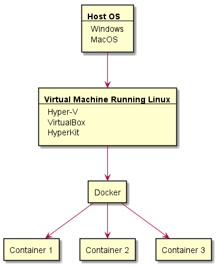

<ul>
<li>Michael Jordon</li>
<li>Larry Bird</li>
<li>Magic Johnson</li>
<li>Charles Barkley</li>
<li>LeBron James</li>
<li>Shaquille O'Neal</li>
</ul>Tools Used in Modern Web Development
Text Editor Requirements
Translate tab keystrokes into spaces.
Adjust tab spacing.
Increase/decrease the indentation level of a block
Cut/Copy/Paste
Convert between DOS/UNIX line endings.
UNIX: lines end with '\n'
DOS: lines end with '\r\n'
vim/neovim/vi
vi is almost always installed on any *NIX/BSD system.
You can also find versions for Windows.
It runs in the terminal
Visual Studio Code
vscode is more akin to a modern IDE
rapidly gaining more adoption and is certainly worth checking out
Notepad++
popular Windows GUI text editor
starts quickly, and many things work right out of the box.
if you want something like notepad, but a little more versatile, then this is for you.
TextMate
popular MacOS GUI text editor
simple to get started, but offers the advanced features you may need as you progress.
Version Control
Version control tracks changes to a group of files.
Teams can use version control to cooperatively change a group of files and revert to a previous state if needed.
Version Control: Example 1
You are working on a project for your CS101 class and you need to write a Python program that plays tic-tac-toe. It must support player-vs-computer and player-vs-player. It’s due in two days. On the first day you write the initial code and implement player-vs-player. It works great and you fall asleep knowing tomorrow you will finish it and turn it in on time. The next morning you update it to support player-vs-computer and everything stops working. What do you do now?
Version Control: Example 2
You are working working with a team of people to implement a complex system that utilizes several files in several different directories. How do you make sure everyone has the most up-to-date version of the files? What happens if two people work on the same file at the same time?
git
Windows
git for windows: Installs git, git BASH, and a GUI. The git command can then be run from PowerShell, CMD, or the BASH shell (which it installs).
Mac
git for Mac Installer: Provides an easy installer for git on MacOS.
Xcode: Xcode installs a command line git and you may have it installed already.
Django
The most popular modern web framework
Uses Python
Combines front end and back end development to meet the needs of most moderately sized web applications
Includes a bunch of things designed to make your life easier
Django Features: Built-in Admin Inteface
Databases need to be populated with data
User information needs to be stored and edited
These types of interfaces are usually only used by one or two people and are typically the developers last thought
Django ships with a default one that works pretty well
Django Features: Templates
<ul>
{% for athlete in athlete_list %}
<li>{{ athlete.name }}</li>
{% endfor %}
</ul>Django Features: ORM
Translating from database responses to useful objects is sometimes an odious task
Object Relational Mappings (ORM) do this automatically
You still need to know how to formulate queries and make a database
You can still see the SQL behind it all
Docker

Web servers usually run Linux
Web frameworks are usually made for Linux
How do we create a Linux environment on our desktop? Containers.
What is a Container? (Briefly)

Docker Options
Docker Toolbox
legacy solution
uses VirtualBox
comes with its own terminal: Docker Quickstart Terminal
runs on everything
Docker Desktop
modern solution
uses native virtualization
uses native terminal: PowerShell or Terminal
runs on most modern OS
Common Docker Problems
- Windows Home doesn’t have HyperV by default
- VT-x isn’t enabled or BIOS support isn’t enabled
Boot into the BIOS and enable VT-x (usually under virtualization)
- It says I don’t have privileges
Run as admin
Common Docker Problems
- Where is Docker?
The docker command should be run from a terminal
- It worked yesterday, but now my containers aren’t behaving
Restart Docker (typically from the task bar)
Putting it all together
Let’s try Exercise 1!